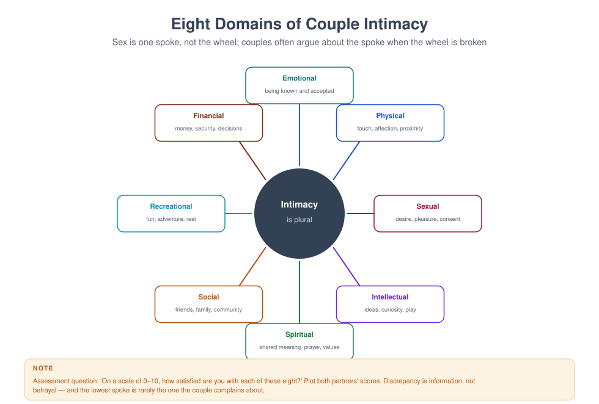

MFT 718 — Intimacy and Relationship Dynamics
Course leader's summary. Intimacy is not a single thing, and sex is not the whole of it. This course integrates attachment, desire, communication, culture and the body — and gives you language for the conversations most couples cannot start.
How to use this book
The material is intimate by design. You will be asked to examine your own beliefs about sex, bodies, gender and obligation, because those beliefs will shape what you notice and what you avoid. Supervision is essential for this course; several exercises should be processed there.
1. Course description
The course covers the psychology and physiology of intimacy and desire, the major sexual concerns presenting in couple therapy, the relational dynamics of pursuit and distance, betrayal and repair, the effects of culture and religion, and the practical skills of talking about sex.
It is explicitly not a sex therapy certification. It is the level of competence a family therapist needs to assess sexual concerns confidently, intervene relationally, and refer appropriately.
2. Learning outcomes
| # | Outcome | Assessed |
|---|---|---|
| LO1 | Assess intimacy across multiple domains | Observed assessment |
| LO2 | Explain desire, arousal and response, including discrepancy | Exam |
| LO3 | Conduct a respectful sexual history | Skills test |
| LO4 | Formulate sexual concerns relationally and identify medical rule-outs | Case study |
| LO5 | Deliver sensate focus and communication interventions | Skills test |
| LO6 | Address culture, religion and consent | Reflective portfolio |
| LO7 | Recognise the limits of your competence and refer | Viva |
3. Assessment
| Component | Weight | Due |
|---|---|---|
| Sexual history observed (30 min) | 30% | Week 6 |
| Case formulation and intervention plan (2,500 words) | 40% | Week 11 |
| Examination | 20% | Week 16 |
| Reflective portfolio | 10% | Ongoing |
4. The fifteen-week plan
| Week | Topic | Practical |
|---|---|---|
| 1 | What intimacy is: eight domains | Domain assessment |
| 2 | Attachment and intimacy | Attachment-informed formulation |
| 3 | Desire: responsive and spontaneous | Desire mapping |
| 4 | The sexual response and its variation | Physiology teaching practice |
| 5 | Taking a sexual history | Observed practice |
| 6 | Sexual history assessed; talking about sex with couples | Language lab |
| 7 | Desire discrepancy and negotiation | Negotiation rehearsal |
| 8 | Common concerns I: erectile and arousal difficulties | Biopsychosocial formulation |
| 9 | Common concerns II: pain, orgasm, low desire | Referral decision-making |
| 10 | Betrayal, infidelity and the repair of trust | Disclosure planning |
| 11 | Case plan due; culture, religion and sexual scripts | Cultural genogram of sex |
| 12 | Consent, coercion and obligation | Boundary and consent work |
| 13 | Sexuality across the lifespan and in special populations | Adaptation planning |
| 14 | Sensate focus and intimacy exercises | Exercise design |
| 15 | Integration: the therapist's own comfort | Viva |
Week 1 — What intimacy is

Couples rarely complain about "intimacy". They complain about sex, or loneliness, or a partner who is always on the phone. Your task is to locate the complaint in the wider system of intimacy domains: emotional, physical, sexual, intellectual, spiritual, social, recreational, financial.
The common pattern. A couple presents with a sexual problem, and assessment reveals that the emotional domain has been starved for years. Treating the sexual symptom alone usually fails; rebuilding the other domains usually helps the sexual one.
Assessment question. "On a scale of 0 to 10, how satisfied are you with each of these eight areas?" Plot both partners' answers. The gap between them, and the gap between the couple's stated problem and their lowest domain, is the clinical map.
Week 2 — Attachment and intimacy
Secure attachment allows both closeness and separateness: the person can ask for comfort and can tolerate a partner's independence.
Anxious attachment produces hypervigilance: sex may be used to secure reassurance, and any distance feels like rejection.
Avoidant attachment produces discomfort with dependency: sex may be easier than emotional closeness, and post-coital distance is common.
Disorganised attachment produces approach–avoidance: desire and fear in the same moment.
Clinical application. "What does sex mean to each of you?" often reveals the attachment function: proof of love, proof of adequacy, a way to avoid conversation, a way to end a conflict, a rare moment of safety.
Week 3 — Desire
Two models.
- Spontaneous desire: desire appears before arousal, seemingly unbidden. More commonly reported by men in many samples, and by people in new relationships.
- Responsive desire: desire emerges after arousal, in response to context, closeness, relaxation or stimulation. More commonly reported by women, by parents of young children, and by people under stress.
The clinical error. Treating responsive desire as "low desire" or "dysfunction". If a person's desire is responsive, the intervention is context — time, privacy, relaxation, non-sexual affection — not pressure to "want it more".
The dual control model (Bancroft & Janssen): sexual response depends on both excitation and inhibition. Stress, shame, performance anxiety, religious guilt and fear of pregnancy all raise inhibition. Lowering inhibition is often more effective than increasing stimulation.
Week 4 — The sexual response
The classic model (Masters & Johnson; Kaplan): desire → excitement → plateau → orgasm → resolution. The circular model (Basson) is more accurate for many people, especially women: intimacy, closeness, context and stimulation interact repeatedly, without a fixed sequence.
What clinicians need to know.
- Arousal is not desire, and lubrication is not consent or interest.
- Arousal non-concordance is normal: the body can show arousal without desire, and desire without arousal.
- Orgasm is not the goal; pleasure and connection are.
- Pain is always a medical question first (vaginismus, vulvodynia, endometriosis, infection, scarring, menopause).
- Medication (especially SSRIs) commonly affects desire, arousal and orgasm.
- Ageing changes speed and reliability, not the capacity for pleasure.
Week 5 — Taking a sexual history
Principles. Ask permission; explain why; use the person's language; be matter-of-fact; do not react with surprise, approval or disapproval; and take a history from each partner separately at least once.
A workable sequence.
- Permission: "I ask everyone about this because it is often part of what brings couples here. Is that all right?"
- Current: "How is intimacy between you at the moment? How often, and how satisfying, from 0 to 10?"
- History: "Was there a time it was good? What was different then?"
- Meaning: "What does sex mean to you — closeness, relief, duty, play, reassurance?"
- Body: "Any pain, any difficulty with arousal or orgasm, any medical condition or medication?"
- History of harm: "Has anyone ever pressured or forced you sexually?" (Ask individually.)
- Culture and faith: "What were you taught about sex growing up? What do you believe is allowed?"
- Expectations: "What would you like to be different — and what would your partner say you want?"
Language. Avoid euphemism and avoid clinical jargon. Use the words the couple uses, and offer a plain alternative if they have none.
Week 6 — Talking about sex
Why couples cannot. Shame, fear of hurting, fear of being judged, previous rejection, cultural prohibition, and the belief that "if you loved me you would know".
The therapist's job is to make the conversation normal, structured and safe. Techniques:
- The third object. Talk about "the sex thing" as an object between you, rather than about the people.
- Scaling. "How satisfied are you, 0–10?" Numbers are less exposing than adjectives.
- Written disclosure. Each writes three sentences about what they want more of; you read them aloud.
- The permission sentence. "I am going to ask something direct. You can say pass."
Scripts to give couples.
Week 7 — Desire discrepancy
The most common sexual complaint in couple therapy. It is a normal difference, not a disorder, until it produces distress.
The pattern. The higher-desire partner pursues; the lower-desire partner avoids; the pursuit increases pressure; the avoidance increases; both feel rejected, and the couple stops touching altogether.
Intervention.
- Normalise. "Desire differences are the norm, not the exception. The problem is not the difference; it is the cycle around it."
- De-pressurise touch. Reintroduce non-sexual affection with an explicit ban on sex for a period.
- Negotiate. What is acceptable to both? Frequency is a poor target; quality, initiation and affection are better ones.
- Address the context. Sleep, children, work, resentment, body image, medication.
- Reject the scoreboard. Sex is not a debt; "I did it last time" is a symptom of the problem, not a solution.
Week 8 — Erectile and arousal difficulties
Always rule out medical causes: vascular disease, diabetes, hypertension, medication, hormonal factors, alcohol and smoking, neurological conditions. Refer to a physician; do not treat as purely psychological.
The psychological pattern. Performance anxiety → monitoring → arousal drops → confirmation of the fear → increased anxiety. The partner's disappointment (real or imagined) intensifies it.
Relational intervention. Reduce performance focus; reintroduce sensate focus; involve the partner in non-demanding intimacy; address the couple's broader pattern; and refer for medical assessment and, where appropriate, medication.
Arousal difficulties in women follow a similar logic, with a stronger contribution from context, pain, relationship quality and hormonal change.
Week 9 — Pain, orgasm and low desire
| Presentation | First question | Relational work |
|---|---|---|
| Painful intercourse | Has a medical cause been excluded? | Pace, consent, fear, communication |
| Difficulty reaching orgasm | Is this new? Is it situational? | Reduce goal focus; explore what works alone |
| Absent or low desire | Is it global or partner-specific? | Context, resentment, responsive desire model |
| Aversion | Is there a history of coercion or trauma? | Safety, trauma-informed pacing, referral |
Referral is not failure. Persistent pain, unexplained physical symptoms, severe trauma responses and psychiatric complexity belong with specialists. The relational work continues alongside.
Week 10 — Betrayal and repair
Betrayal trauma (developed in MFT 710). The betrayed partner's symptoms mimic PTSD: intrusion, hypervigilance, intrusive images, and a shattered assumption that the partner is safe.
Repair requires four things, in order.
- Safety — the behaviour has stopped; boundaries are in place; no violence.
- Disclosure — enough truth to end the lying, not so much detail that it becomes a weapon. Agree what will be asked and answered.
- Remorse that is not self-pity — "I did this, it was my choice, and I see what it cost you."
- Consistency over time — transparency, reliability, and patience with the betrayed partner's cycling.
The cycling is normal. Recovery is not linear: the betrayed partner may be calm for two weeks and then devastated by a song. Warn both partners, so the cycle does not become a second betrayal.
Sex after betrayal. Often the couple either avoids sex entirely or uses it to short-circuit the conversation. Both are understandable and neither is repair. Rebuild slowly, with explicit consent and no expectation.
Week 11 — Culture, religion and sexual scripts
Sexual scripts are culturally learned instructions about who should want what, when, and with whom.
Questions for the couple (each individually first).
- What were you taught about sex before marriage? By whom?
- What did you learn about your body?
- What is permitted, and what is forbidden? What happens if you break the rule?
- Is sex a duty, a gift, a right, a sin, a reward?
- Who initiates? Who is allowed to refuse? What happens when someone refuses?
Clinical themes in Nigerian and similar contexts.
- Pre-marital abstinence teaching that produces guilt after marriage.
- The expectation that sex is a marital obligation, which can silence refusal.
- Female sexual pleasure as unspoken or stigmatised.
- Bride price and the sense of "ownership" it can create.
- Family planning, fertility pressure, and the stigma of childlessness.
- Religious counselling that frames desire as sin.
- Polygyny, and the sexual dynamics between co-wives.
The clinical stance. You are not there to adjudicate the script; you are there to make it speakable, and to ensure that consent is real for both people.
Week 12 — Consent, coercion and obligation
Consent is ongoing, specific and freely given. It can be withdrawn at any point, including during sex, and including in marriage.
Coercion includes pressure, sulking, threats, guilt, economic withholding, and the use of religion. It does not have to be physical to be harmful.
Assess individually: "Can you say no to your partner without fear of what will happen? What does happen when you say no?"
When there is coercion, the work is with the person experiencing it first: safety, validation, and options. Couple work is contraindicated until safety is established.
Week 13 — Lifespan and special populations
| Group | Considerations |
|---|---|
| Parents of young children | Exhaustion, touch saturation, interrupted privacy; plan rather than wait for spontaneity |
| Midlife | Hormonal change, body image, teenagers in the house, career strain |
| Later life | Assumption of asexuality by families and clinicians; health, medication, bereavement, new partners |
| Chronic illness and disability | Access, pain, fatigue, body image, and the partner's carer role |
| LGBTQ+ couples | Minority stress, disclosure, family rejection, and the absence of affirming services |
| Asexual people | Absence of sexual attraction is not pathology; negotiate intimacy on other terms |
| Post-cancer | Body change, fertility, fear, and the couple's avoidance |
The clinician's assumption to avoid: that everyone wants sex, that everyone should, and that a relationship without sex is deficient. Ask what this couple wants.
Week 14 — Sensate focus
Purpose. To reduce performance anxiety and rebuild non-demanding physical intimacy.
Progression.
- Non-genital touch, no sex. Twenty minutes, one partner touches, the other receives; then swap. Feedback only on what felt pleasant, not on what was missing.
- Genital touch, still no intercourse. Continue the same structure.
- Intercourse permitted but not required. Often the couple is advised to continue the exercises first.
- Generalisation. Gradually return to the couple's own sexual repertoire.
Rules. No goal, no intercourse during the first stages, no negative feedback, and a clear opt-out at any time. Couples who "fail" at sensate focus are usually still performing.
Week 15 — The therapist's comfort
Your own sexual history, beliefs and discomfort will shape this work. Write 500 words on: what you find hardest to ask; what judgements you notice; and what you will do when you are out of your depth. Then defend it in a viva, and take it to supervision.
Glossary
Arousal non-concordance — mismatch between physiological arousal and subjective desire. Desire discrepancy — a difference between partners in the frequency or intensity of sexual desire. Dual control model — sexual response as the balance of excitation and inhibition. Responsive desire — desire that emerges in response to arousal or context. Sensate focus — graded, non-demanding touch exercises. Sexual script — culturally learned expectations about sexual behaviour and meaning. Spontaneous desire — desire experienced before arousal, without an obvious trigger.
Self-assessment
Multiple choice
1. Lubrication indicates: (a) consent (b) physiological arousal, which may not match desire (c) desire (d) orgasm
2. Responsive desire is best supported by: (a) pressure to initiate (b) context, relaxation and non-sexual affection (c) performance goals (d) frequency targets
3. The most common sexual complaint in couple therapy is: (a) infidelity (b) desire discrepancy (c) pain (d) infertility
4. Sensate focus requires: (a) intercourse from stage one (b) no goal and no intercourse initially (c) feedback on what is missing (d) daily practice
5. Erectile difficulties should first prompt: (a) psychodynamic exploration (b) medical rule-out (c) couple blame (d) medication advice
6. Consent in marriage is: (a) automatic (b) ongoing, specific and revocable (c) implied by the ceremony (d) not a clinical matter
7. Betrayal trauma symptoms resemble: (a) depression only (b) PTSD (c) psychosis (d) nothing
8. Asexual identity: (a) is a disorder (b) is not pathology; intimacy may be negotiated otherwise (c) requires treatment (d) means no relationships
9. Painful intercourse is first: (a) a relational problem (b) a medical question (c) a sign of avoidance (d) untreatable
10. The therapist should refer when: (a) the couple mentions sex (b) persistent pain, trauma complexity or issues beyond competence arise (c) the couple is young (d) culture differs
Answer key
1 b · 2 b · 3 b · 4 b · 5 b · 6 b · 7 b · 8 b · 9 b · 10 b
Short answer
- Name the eight domains of intimacy and explain why the lowest is not always the complaint.
- Distinguish spontaneous and responsive desire and give the clinical implication.
- Write six questions from a sexual history.
- What are the four stages of sensate focus?
- How do you assess for coercion without leading the client?
Essay (choose one, 2,000 words)
- "Desire discrepancy is a relationship problem, not a disorder." Discuss with a case.
- Analyse the influence of religious teaching on sexual intimacy in couple therapy.
- Discuss the ethical and clinical issues in working with sex in a couple where coercion is suspected.
Further reading
- Basson, R. (2001). Human sex response cycles. Journal of Sex and Marital Therapy, 27(1), 33–43.
- Bancroft, J., & Janssen, E. (2000). The dual control model of male sexual response. Neuroscience & Biobehavioral Reviews, 24(5), 571–579.
- Leiblum, S. R. (Ed.). (2007). Principles and Practice of Sex Therapy (4th ed.). Guilford.
- Johnson, S. M. (2019). Attachment Theory in Practice. Guilford.
- Perel, E. (2006). Mating in Captivity. Harper.
- Nagoski, E. (2019). Come as You Are (rev. ed.). Simon & Schuster.